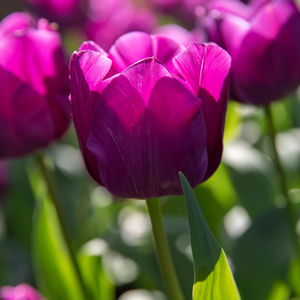
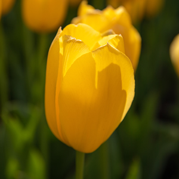

.rounded 类为图像添加圆角
.rounded-circle 类将图像塑造为圆形
.img-thumbnail 类将图像塑造为缩略图（带边框）
使用 .float-start 类将图像向左浮动，或使用 .float-end 向右浮动
为了使图像居中，我们通过向图像添加了 utility 类 .mx-auto (margin:auto) 和 .d-block (display:block)
.img-fluid 类使图像可以很好地缩放到父元素（请调整浏览器窗口的大小来查看效果）：